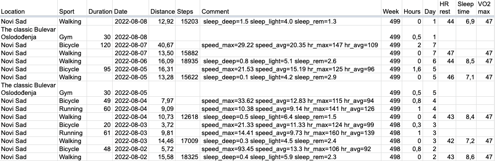

garmin-dayly
Fill Google Sheets with fitness data from Garmin Connect.

Installation
pip install garmin-daily
Credentials
Garmin Connect
Place login and password into env vars GARMIN_EMAIL and GARMIN_PASSWORD respectfully
export GARMIN_EMAIL="andrey@sorokin.engineer"
export GARMIN_PASSWORD='password'
Google Sheets
Get Google credentials for Google Sheet as explained in gspread:Using Service Account
Place it to ~/.config/gspread/service_account.json.
Do not forget to grant access to you sheets for this service emails.
Google Sheet structure
Expected columns:
- Location
- Sport
- Duration
- Date
- Distance
- Steps
- Comment
- Week
- Hours
- Week Day
- HR rest
- Sleep time
- VO2 max
First row should be with the columns' titles.
You can add another column titles in the mapping COLUMNS_MAP
garmin-daily command line interface
To add rows to Google Sheet from Garmin Connect, use garmin-daily, get help with
garmin-daily --help
At minimum, you specify Google Sheet name and that's all
garmin-daily --sheet "My Fitness"
It also can automatically create you gym trainings if you have them on specific days. It's easier to correct already created rows then to create them manually from scratch.
List the week days with gym trainings in the parameters and specify your gym location and usual training duration:
garmin-daily --sheet "My Fitness" \
-g mon -g tue -g fri \
--gym-duration 30 \
--gym-location "Cool place"